Using Data provided by AlexTheAnalyst about different data professionals, their salaries, locations, ethnicity, and more in a project to showcase skills in cleaning data in excel and presenting that information in PowerBI.
- Excel - update raw data by removing empty columns, deleting useless data, and transforming generic data into usable data.
- Power BI - create an amazing dashboard displaying skills in cards, gauges, treemap, stacked bar chart, stacked column chart, and donut chart.
Excel Data Cleaning
In order to clean the original file the following was done to transform the data:
- Delete empty columns: Browser, OS, City, Country, Referrer
- Delete useless columns: email where the only value is 'anonymous'
- Cleaned 'Q1 - Current Role?' data by transforming 75 additional values created by respondents filling in "Other (Please Specify):" down to 6 new values for a total of 12 values. 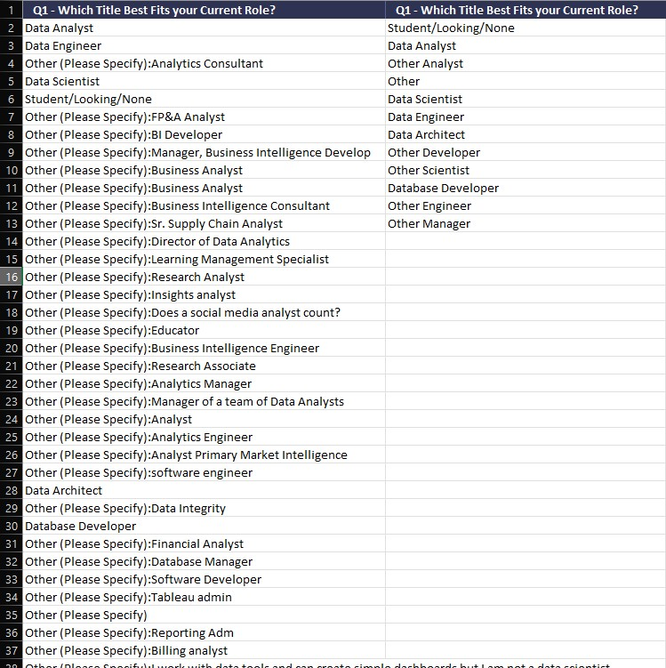
- Created new column based on 'Q3 - Current Yearly Salary?' data, transforming the data from a selected range to numerical values by taking the average of the range. 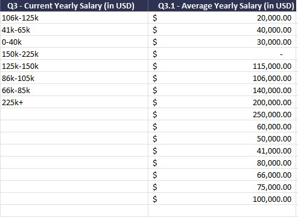
- Cleaned 'Q4 - industry?' data by transforming 135 additional values created by respondents filling in "Other (Please Specify):" down to 21 new values for a total of 29 values. 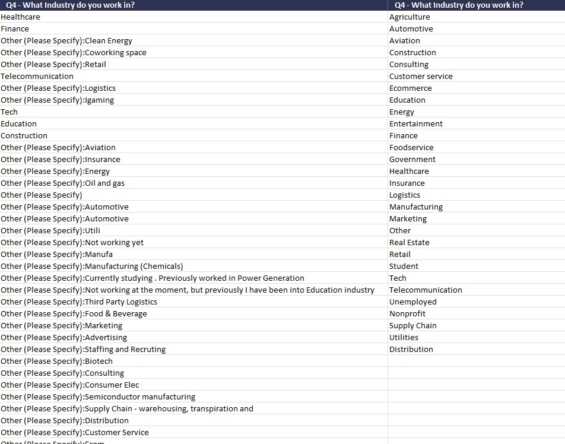
- Cleaned 'Q5 - favorite programming language?' data by transforming 34 additional values created by respondents filling in "Other:" down to 5 new values for a total of 11 values. 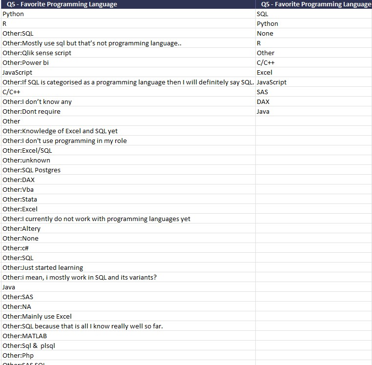
- Cleaned 'Q8 - if new job, what is important?' data from 35 additional values created by respondents filling in "Other (Please Specify):" down to 4 new values for a total of 8 values. 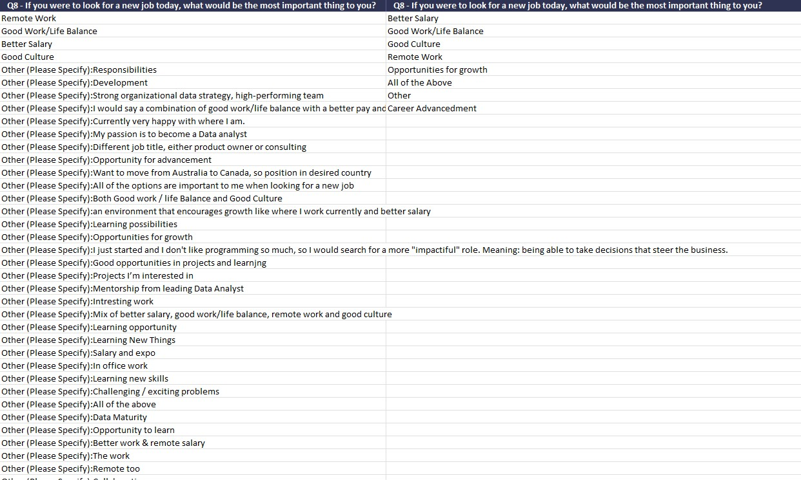
- Cleaned 'Q11 - country?' data by removing "Other:" data where applied, and rename certain misspelled countries. 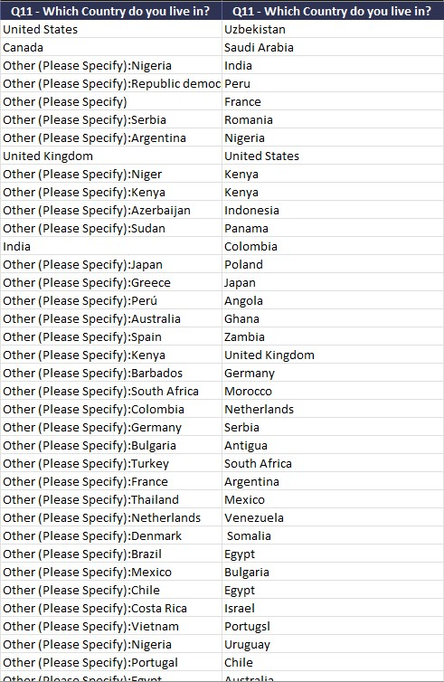
- Cleaned 'Q13 - ethnicity?' by changing ""Other:" data where applied, grouping them in with existing values. 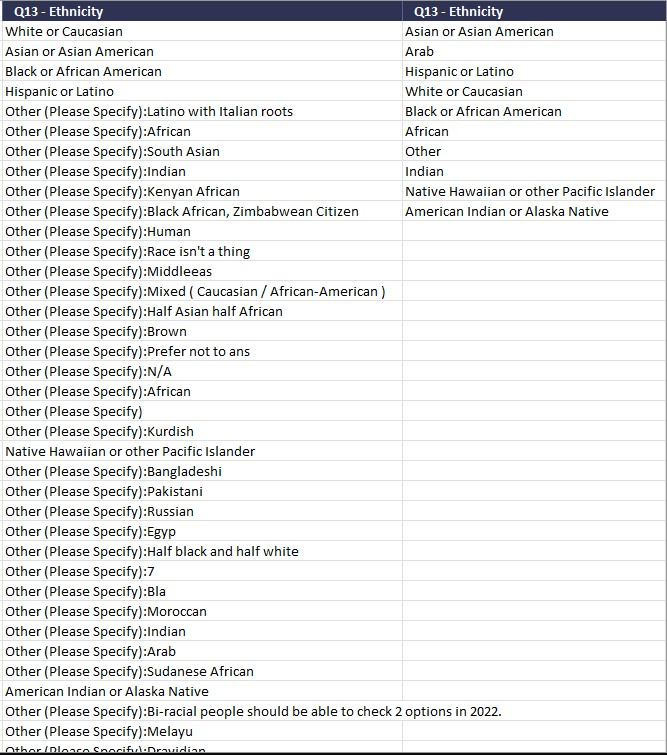
Power BI
Once the data was cleaned I imported data into Power BI and started creating my dashboard. I created 8 visualizations taking advantage of cards, gauges, treemap, stacked bar chart, stacked column chart, and donut chart. With that I was able to create the following PDF/screenshots in order to see Salary data clearly.
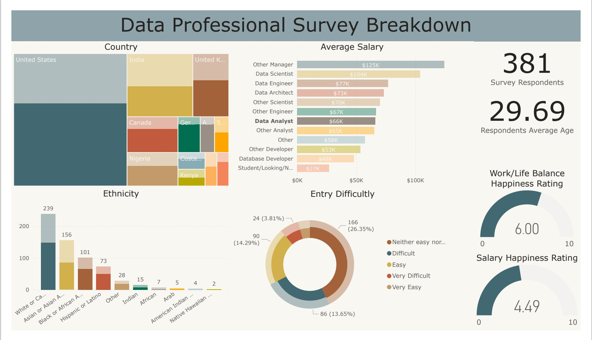With this we can see that worldwide the average salary for Data Analyst is around $66,000, provided by 381 respondents, with an average age of 29.69, work/life rating of 6/10, and salary rating of 4.49/10.
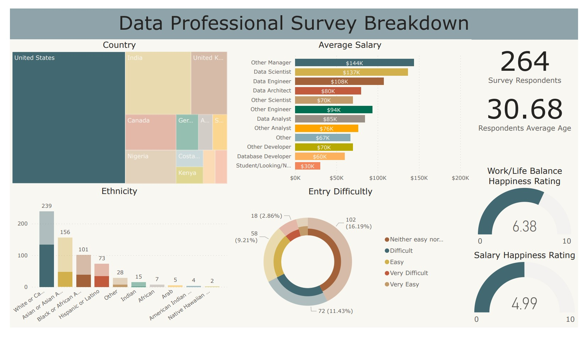If we zoom in a bit at US data we can see that Data Analyst average salaries are higher at $85,000, provided by 264 respondents, with an average age of 30.68, work/life rating of 6.38/10, and salary rating of 4.99/10.
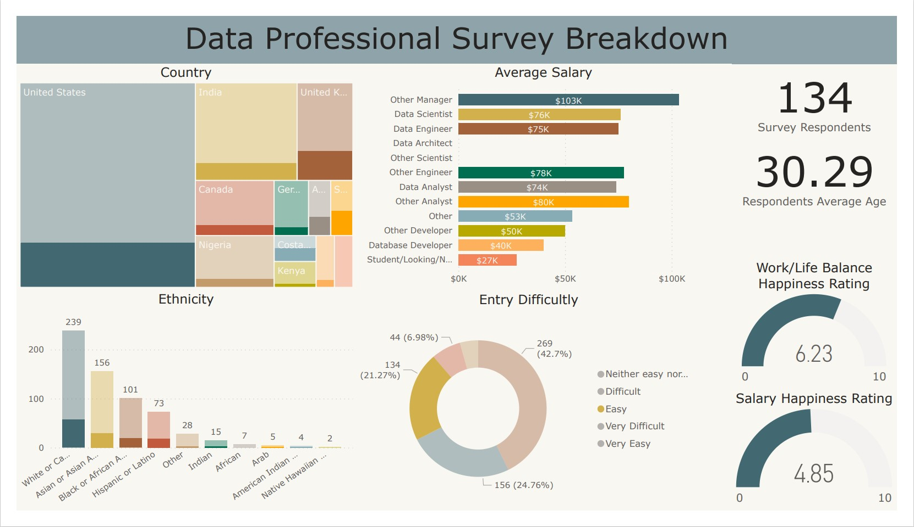When looking at the difficulty for getting into Data Analyst we see that 21.27% say it is easy with a salary of $74,000 from 134 respondents. Although not shown I would like to provide that for difficulty level neither easy not hard with 42.7% representing 269 respondents and level hard with 24.76% representing 156 respondents, the salary does go down to $64,000 worldwide.
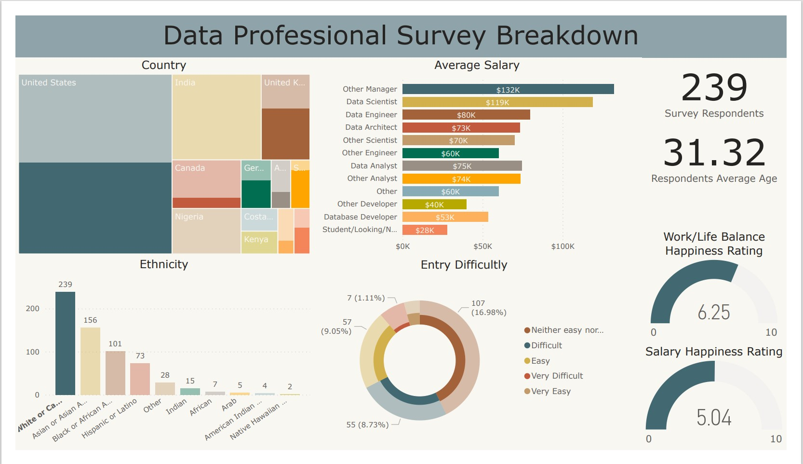Taking a closer look at the ethnicity we can see that there is a pretty big difference between White and Asian, where White people make on average $75,000 while Asian people make $62,000.
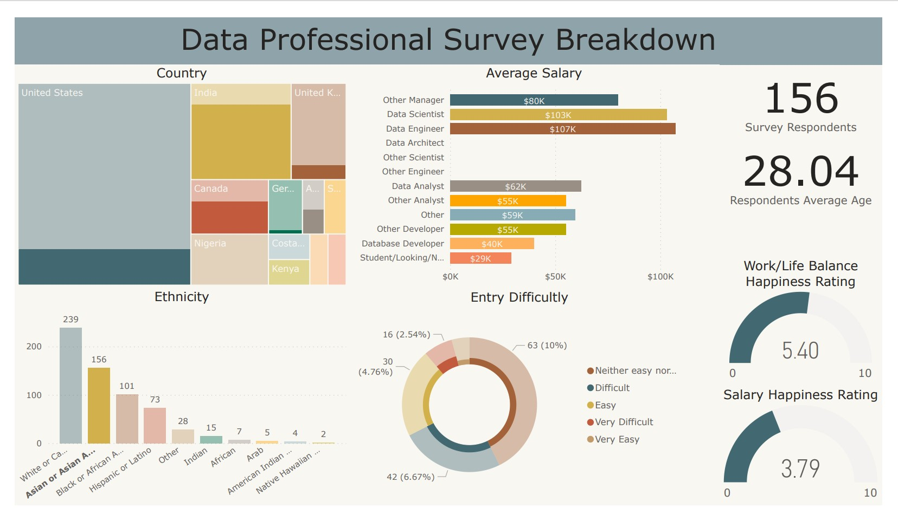Links
Please also take a look at the following links to the original dataset, cleaned dataset, and dashboard
Note: Apologies, currently Power BI link is not available due to not being able to open account with Power BI without a work account.